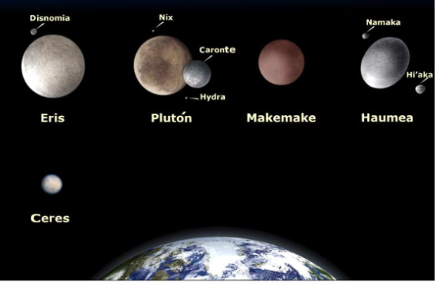

Son pequeños planetas que también orbitan alrededor del sol y NO son satélites de otros planetas. En nuestro Sistema Solar existen cinco: Ceres, Eris, Makemake, Haumea y Plutón.
Se llama satélite a un cuerpo que gira alrededor de otro que suele ser más grande. Son sólidos y carecen de atmósfera. En el Sistema Solar los planetas poseen satélites, si bien alrededor de la Tierra solo hay un satélite natural: la Luna. La Luna es un cuerpo celeste rocoso y sin anillos. Los seres humanos la admiramos por su hermosura, por su cercanía y porque brilla en el cielo. Debes saber que en realidad la luna es un planeta oscuro que no desprende luz, sino que refleja la luz que recibe del sol. *Se llama Satélites artificiales a los fabricados y lanzados al espacio por los humanos para tomar todo tipo de datos sobre un planeta.
En el sistema solar hay otros elementos, como los asteroides, los cometas y los meteroides.